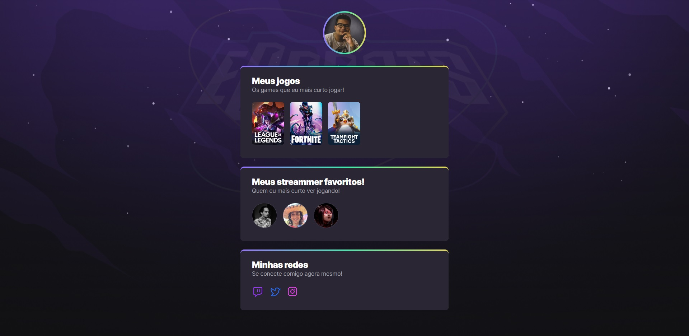
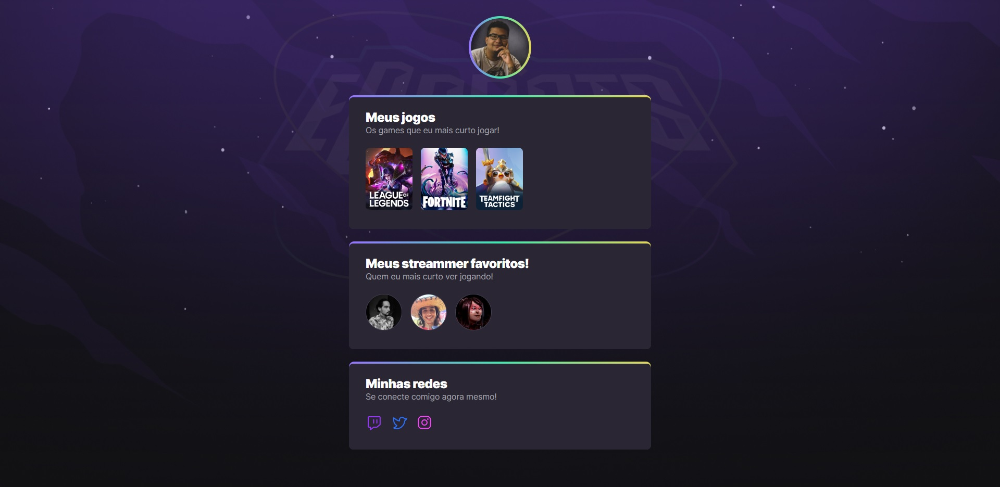

Sobre mim
Sou criativo, auto motivado e fascinado por inovação. Estou sempre em busca de conhecimentos que me possibilitem expandir minhas áreas de conhecimento. Consigo obter soluções para problemas com facilidades e perceber oportunidades de negócios. Habilidades interpessoais e conhecimento diversificado são os meus principais diferenciais.
Um pouco sobre minha caminhada
No ano de 2014, tive o meu primeiro contato o desenvolvimento web, aprendi um pouco de HTML e CSS de forma autodidata. Mas só em 2021, decidi migrar de área e me tornei aluno da Rocketseat, o que me posibilitou ter um conhecimento mais consolidado, este que utilizei na criação desse projeto que tem como objetivo evoluir de acordo as minhas habilidades.
Experiências extras
Fui responsável por realizar updates no banco de dados Oracle via PL/SQL, gerenciamento do ERP Winthor e criação/manutenção de servidores vituais via VMware.
Meus estudos e desafios realizados
 

Aqui apresento alguns dos projetos que realizei durante minha jornada de estudos na Rocketseat ultilizando ferramentas como Javascript, Typescript , React, SCSS, Tailwind, API, Next.js dentre outras que hoje formam a minha base de estudos continuo como desenvolvedor front-end, todos os projetos estão disponiveis no meu Github.